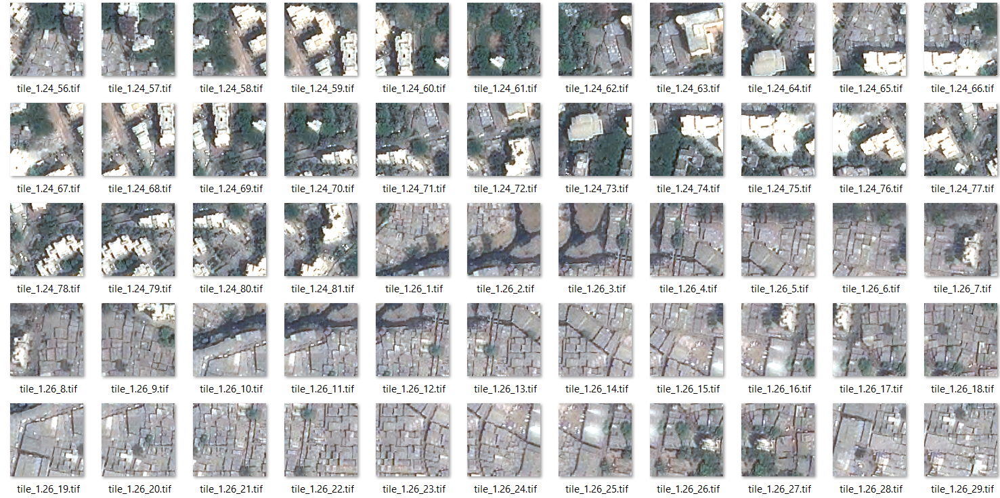
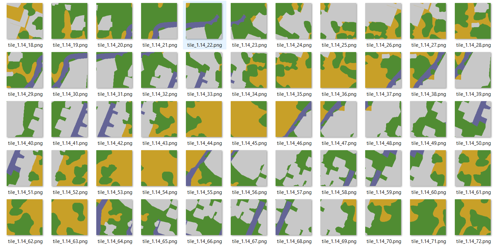
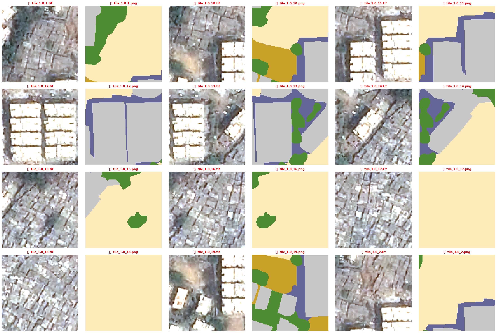
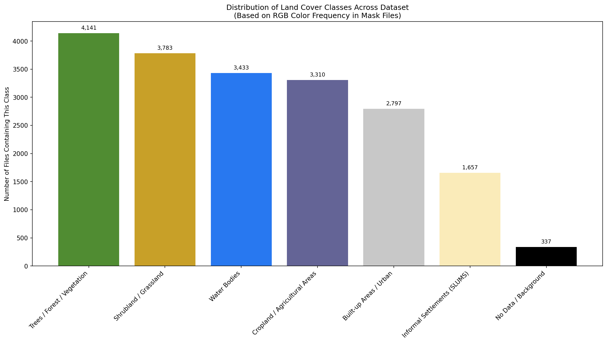
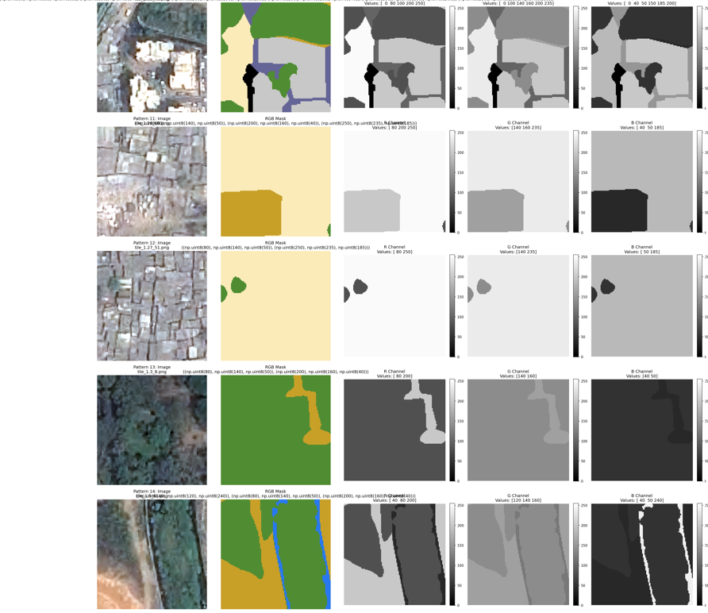
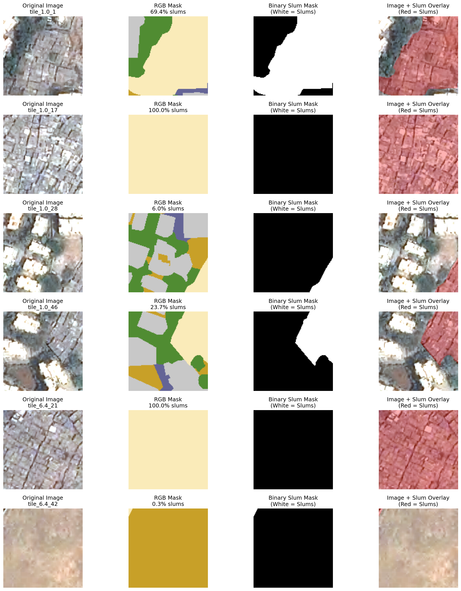

In-depth analysis of the entire dataset to identify land cover classes, assess slum coverage, and validate dataset suitability for binary slum detection training
This week focused on performing a comprehensive analysis of the entire dataset to identify all land cover classes and assess slum coverage. Using custom Python scripts, I processed all mask files across train, validation, and test splits to map unique RGB colors to classes and quantify slum pixel distribution throughout the dataset.
Source: nichula01/Slum detection using UNET
Custom Python scripts for comprehensive dataset analysis and validation
Complete analysis pipeline with statistical reporting and visualization tools
The analysis revealed that the previously used dataset was not suitable for our binary slum detection task due to several critical limitations that affected model performance and training effectiveness.
To address these limitations, we implemented a comprehensive dataset analysis pipeline to identify a more suitable dataset with better slum coverage and annotation quality. This analysis forms the foundation for selecting an appropriate dataset for binary slum detection training.

Visual representation of the dataset coverage and distribution.

Mask visualization showing annotated land cover classes and slum regions.

Sample visualization of mask tiles used for training and validation, highlighting spatial coverage and annotation patterns.

Bar chart showing the distribution of land cover classes and slum pixels across the dataset splits.

Analysis of mask patterns to identify annotation consistency and spatial distribution of slum regions.

Representative examples of slum regions identified in the dataset, illustrating annotation quality and diversity.
This week I studied how to use the Mamba architecture for slum detection in satellite images. Below is a comparison of UNet and Mamba for this task.
| Feature / Aspect | UNet | Mamba |
|---|---|---|
| Task Suitability | Designed for segmentation | Not originally for segmentation |
| Spatial Detail Preservation | Excellent (due to skip connections) | Moderate (no skip connections by default) |
| Long-Range Dependency Modeling | Limited | Strong (via state-space modeling) |
| Training Complexity | Easy and stable | Harder, may need tuning |
This module introduces advanced UNet-based architectures specifically optimized for satellite image slum detection. It supports multiple encoder backbones (ResNet, EfficientNet, MobileNet, etc.) and integrates features such as attention mechanisms, multi-scale feature extraction, and custom decoders with skip connections.
Github Repository: segmentation_models.pytorch